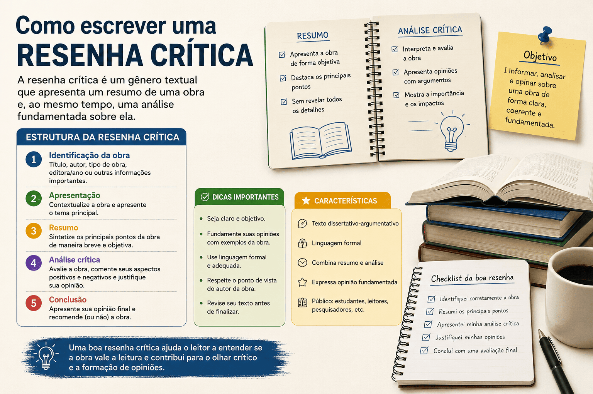

Como Escrever uma Resenha Crítica: Guia Completo com Estrutura, Exemplos e Dicas
A resenha crítica é um dos gêneros textuais mais cobrados em escolas, universidades e concursos. Seu objetivo vai além de resumir uma obra: ela apresenta uma análise fundamentada, avaliando aspectos positivos e negativos a partir de argumentos consistentes. Saber elaborar uma boa resenha desenvolve a capacidade de leitura, interpretação e argumentação, competências essenciais para a vida acadêmica e profissional.

O que é uma resenha crítica?
A resenha crítica é um texto que apresenta informações sobre uma obra — como um livro, filme, artigo científico, documentário, peça teatral ou álbum musical — acompanhadas da análise e da opinião fundamentada do autor da resenha.
Diferentemente do resumo, que apenas sintetiza as ideias principais, a resenha crítica interpreta, compara e avalia a qualidade da obra utilizando argumentos e exemplos.
Qual é a finalidade da resenha crítica?
Esse gênero textual possui diversas finalidades:
- Informar o leitor sobre uma obra;
- Apresentar uma avaliação crítica;
- Destacar qualidades e limitações;
- Relacionar a obra ao contexto histórico, cultural ou científico;
- Auxiliar outras pessoas na decisão de ler ou não determinada obra.
Características da resenha crítica
- Linguagem clara, objetiva e formal;
- Argumentação baseada em evidências;
- Análise dos principais aspectos da obra;
- Apresentação de opinião fundamentada;
- Uso de exemplos para justificar os argumentos;
- Coerência e organização textual.
Estrutura da resenha crítica
1. Identificação da obra
O texto inicia apresentando as informações básicas da obra analisada.
- Título;
- Autor;
- Editora ou produtora;
- Ano de publicação;
- Número de páginas (quando pertinente).
Exemplo:
"A obra Vidas Secas, de Graciliano Ramos, publicada em 1938, é considerada um dos principais romances do Modernismo brasileiro."
2. Apresentação do tema
Explique, de forma breve, sobre o que trata a obra.
Evite revelar informações importantes (spoilers) quando isso comprometer a experiência do leitor.
3. Resumo objetivo
Apresente uma síntese das principais ideias ou acontecimentos da obra.
Essa parte deve ser breve e imparcial.
4. Análise crítica
Este é o elemento mais importante da resenha.
Analise aspectos como:
- Organização;
- Linguagem utilizada;
- Originalidade;
- Qualidade dos argumentos;
- Coerência;
- Profundidade da abordagem;
- Importância da obra.
Também é interessante comparar a obra com outras semelhantes.
5. Avaliação final
Finalize apresentando sua opinião geral.
Explique se recomenda a obra e para qual público ela é indicada.
Como fazer uma boa análise crítica?
Uma boa crítica não significa apenas dizer que gostou ou não da obra.
É necessário justificar cada opinião com argumentos consistentes.
Por exemplo:
"O autor constrói personagens complexos e realistas, permitindo ao leitor compreender profundamente os conflitos sociais retratados. Entretanto, em alguns capítulos, o ritmo da narrativa torna-se excessivamente lento."
Observe que há elogio e crítica, ambos fundamentados.
Diferença entre resumo e resenha crítica
| Resumo | Resenha Crítica |
|---|---|
| Apresenta apenas as ideias principais. | Resume e analisa. |
| Não apresenta opinião. | Possui avaliação fundamentada. |
| É descritivo. | É argumentativo. |
| Não faz julgamento. | Analisa pontos positivos e negativos. |
Expressões úteis para escrever uma resenha crítica
- A obra apresenta...
- O autor demonstra...
- Um dos principais méritos é...
- Entretanto...
- Por outro lado...
- Observa-se que...
- É possível perceber...
- Conclui-se que...
- A leitura é recomendada porque...
Exemplo de Resenha Crítica
Resenha crítica do livro O Pequeno Príncipe, de Antoine de Saint-Exupéry
Publicado originalmente em 1943, O Pequeno Príncipe é uma das obras mais conhecidas da literatura mundial. Embora seja frequentemente classificado como um livro infantil, sua narrativa apresenta reflexões profundas sobre amizade, amor, responsabilidade, solidão e o modo como os adultos enxergam a vida. A história acompanha um piloto que, após sofrer um acidente no deserto do Saara, conhece um pequeno príncipe vindo de outro planeta. Durante os diálogos entre os dois personagens, são apresentados diferentes tipos de pessoas e comportamentos humanos, sempre por meio de metáforas e símbolos que estimulam a reflexão do leitor. Um dos principais méritos da obra é sua linguagem simples e acessível, que permite diferentes níveis de interpretação. Crianças podem apreciar a aventura vivida pelo protagonista, enquanto jovens e adultos encontram críticas à superficialidade, ao materialismo e à perda da sensibilidade ao longo da vida. Essa característica torna o livro atemporal e relevante para leitores de diferentes idades. Outro aspecto positivo é a construção simbólica dos personagens. Cada planeta visitado pelo pequeno príncipe representa um comportamento humano específico, como a vaidade, a ambição, o autoritarismo ou a obsessão pelo trabalho. Essa estratégia narrativa contribui para que o leitor reflita sobre suas próprias atitudes e sobre a sociedade em que vive. Entretanto, o ritmo da narrativa pode parecer lento para leitores que esperam uma sequência constante de acontecimentos ou uma trama baseada em ação. Como a obra privilegia reflexões filosóficas, alguns trechos exigem uma leitura mais cuidadosa para que seus significados sejam plenamente compreendidos. Em síntese, O Pequeno Príncipe permanece como uma das obras mais importantes da literatura universal por unir simplicidade narrativa e profundidade temática. Sua leitura é recomendada para estudantes, professores e qualquer pessoa interessada em desenvolver uma visão mais sensível e crítica sobre as relações humanas e os valores da vida.
Entendendo a estrutura da resenha crítica
O texto apresentado acima segue a estrutura tradicional de uma resenha crítica. Observe como cada parte desempenha uma função específica na construção do gênero textual.
1. Identificação da obra
A resenha inicia apresentando o título da obra, seu autor e o ano de publicação. Essas informações contextualizam o leitor e identificam claramente o objeto da análise.
Trecho correspondente:
"Publicado originalmente em 1943, O Pequeno Príncipe é uma das obras mais conhecidas da literatura mundial."
2. Apresentação do tema
Após identificar a obra, a resenha explica brevemente do que ela trata, sem revelar todos os acontecimentos. O objetivo é situar o leitor no contexto da narrativa.
Trecho correspondente:
"A história acompanha um piloto que, após sofrer um acidente no deserto do Saara, conhece um pequeno príncipe vindo de outro planeta."
3. Resumo da obra
Em seguida, o autor faz um resumo objetivo dos principais acontecimentos e ideias da obra. Esse resumo é breve e serve apenas para fornecer as informações necessárias antes da análise crítica.
Perceba que a resenha não conta toda a história nem revela o desfecho da narrativa.
4. Análise crítica
Esta é a parte mais importante da resenha. Nela, o autor deixa de apenas informar e passa a analisar a qualidade da obra.
No exemplo, são destacados diversos aspectos:
- A linguagem simples e acessível;
- A profundidade das reflexões;
- O simbolismo dos personagens;
- A atualidade dos temas abordados.
Observe também que a análise apresenta justificativas. O autor não afirma simplesmente que a obra é boa; ele explica os motivos que sustentam essa avaliação.
5. Apresentação de um ponto negativo
Uma boa resenha crítica procura manter equilíbrio na avaliação. Por isso, além dos aspectos positivos, ela também pode apontar limitações da obra.
No exemplo, foi apresentado o seguinte comentário:
"Entretanto, o ritmo da narrativa pode parecer lento para leitores que esperam uma sequência constante de acontecimentos..."
Perceba que a crítica é feita de maneira respeitosa e fundamentada, explicando por que determinado aspecto pode não agradar a todos os leitores.
6. Conclusão
O último parágrafo apresenta uma avaliação geral da obra e recomenda sua leitura para determinado público.
Essa recomendação é consequência dos argumentos desenvolvidos anteriormente, tornando a conclusão coerente com toda a análise.
O que diferencia essa resenha de um resumo?
Se esse texto fosse apenas um resumo, ele apresentaria somente os acontecimentos da história. Entretanto, a resenha crítica vai além da descrição dos fatos.
Nela, encontramos avaliações como:
- "Um dos principais méritos da obra..."
- "Outro aspecto positivo..."
- "Entretanto, o ritmo da narrativa pode parecer lento..."
- "Sua leitura é recomendada..."
Esses trechos demonstram claramente a opinião do autor da resenha, sempre acompanhada de argumentos que justificam seu posicionamento. Essa fundamentação é o principal elemento que diferencia uma resenha crítica de um simples resumo.
Conclusão
Uma boa resenha crítica combina informação, síntese e argumentação. Primeiro, apresenta a obra ao leitor; depois, resume seus aspectos essenciais; em seguida, desenvolve uma análise fundamentada, destacando qualidades e limitações; por fim, conclui com uma avaliação geral. Essa estrutura torna a resenha um gênero textual amplamente utilizado em escolas, universidades, revistas, jornais e diversos meios de divulgação cultural e científica.
Erros mais comuns
- Transformar a resenha em um resumo;
- Emitir opiniões sem justificativa;
- Utilizar linguagem excessivamente informal;
- Fazer críticas sem argumentos;
- Copiar opiniões de outras pessoas;
- Não apresentar uma conclusão.
Dicas para produzir uma excelente resenha crítica
- Leia ou assista à obra com atenção.
- Faça anotações durante a leitura.
- Pesquise informações sobre o autor.
- Contextualize a obra.
- Fundamente todas as opiniões.
- Utilize linguagem objetiva.
- Revise ortografia e pontuação.
Quando a resenha crítica é utilizada?
Esse gênero textual aparece em diversos contextos:
- Escolas;
- Universidades;
- Revistas acadêmicas;
- Jornais;
- Blogs literários;
- Sites especializados em cinema e literatura;
- Avaliações de livros e artigos científicos.
Conclusão
Produzir uma boa resenha crítica exige leitura atenta, capacidade de síntese e argumentação. Mais do que relatar o conteúdo de uma obra, o autor deve analisá-la de forma equilibrada, apresentando opiniões sustentadas por evidências. Dominar esse gênero textual contribui para o desenvolvimento do pensamento crítico e da escrita acadêmica, habilidades valorizadas em diferentes etapas da formação escolar e universitária.
Perguntas Frequentes
Resenha crítica e resumo são a mesma coisa?
Não. O resumo apenas sintetiza as ideias principais, enquanto a resenha crítica apresenta também uma avaliação argumentativa da obra.
É obrigatório dar opinião?
Sim. A opinião é um elemento essencial da resenha crítica, mas deve sempre ser fundamentada em argumentos.
Posso fazer críticas negativas?
Sim. Entretanto, elas devem ser justificadas com base na análise da obra, evitando julgamentos superficiais.
Quais obras podem receber uma resenha crítica?
Livros, filmes, documentários, artigos científicos, peças teatrais, exposições, séries, jogos e diversas outras produções culturais ou acadêmicas.
Referências
- ABREU, Antônio Suárez. A Arte de Argumentar. São Paulo: Ateliê Editorial.
- MACHADO, Anna Rachel; LOUSADA, Eliane; ABREU-TARDELLI, Lília. Resenha. São Paulo: Parábola Editorial.
- MARCUSCHI, Luiz Antônio. Produção Textual, Análise de Gêneros e Compreensão. São Paulo: Parábola Editorial.
- KOCH, Ingedore Villaça. Argumentação e Linguagem. São Paulo: Cortez.
- BRASIL. Base Nacional Comum Curricular (BNCC). Ministério da Educação.
Explore Outros Conteúdos
Continue seus estudos acessando outras seções do site Mestre Kira: